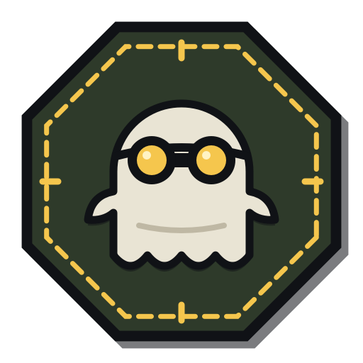

Seu navegador não mostra o jogo (falta suporte a canvas).
Ative o JavaScript para jogar.
DRONE 02 ALT 120 M GRAV
G
H

S
T
OUTPOST
PREPARANDO A MISSÃO
No celular? Jogue a versão para toque
Gire o celular para jogar deitado